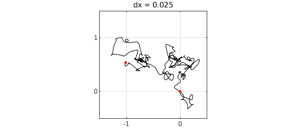
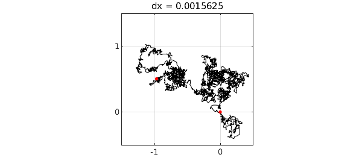

By integrating coin flips in one or more dimensions, we get a random walk, which becomes Brownian motion in the limit of infinitely many infinitely small steps. Chebfun's randnfun command enables us to explore a smooth continuous analogue of this process.
Let's work in 2D, using a complex variable for convenience. Here we plot the indefinite integral of a complex random function scaled by $(dx)^{-1/2}$. Red dots mark the initial and end points.
LW = 'linewidth'; MS = 'markersize'; ms = 12; dx = 0.1; rng(1), f = randnfun(dx,'big','complex'); g = cumsum(f); plot(g,'k',LW,1), grid on, hold on plot(g([-1 1]),'.r',MS,ms), hold off axis([-1.5 .5 -.5 1.5]), axis square title(['dx = ' num2str(dx)]) set(gca,'xtick',-2:2,'ytick',-2:2)
We divide the characteristic length defining the random function by 4 three times. The limit of Brownian motion is being approached. For details, see [1].
for k = 1:3 dx = dx/4; rng(1), f = randnfun(dx,'big','complex'); g = cumsum(f); plot(g,'k',LW,1-.15*k), grid on, hold on plot(g([-1 1]),'.r',MS,ms), hold off axis([-1.5 .5 -.5 1.5]), axis square title(['dx = ' num2str(dx)]) set(gca,'xtick',-2:2,'ytick',-2:2), snapnow end


[1] S. Filip, A. Javeed, and L. N. Trefethen, Smooth random functions, random ODEs, and Gaussian processes, SIAM Rev. 61 (2019), 185-205.